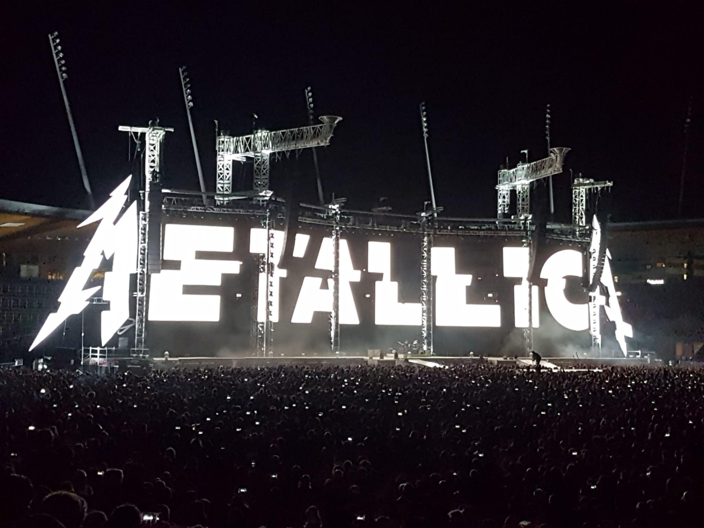
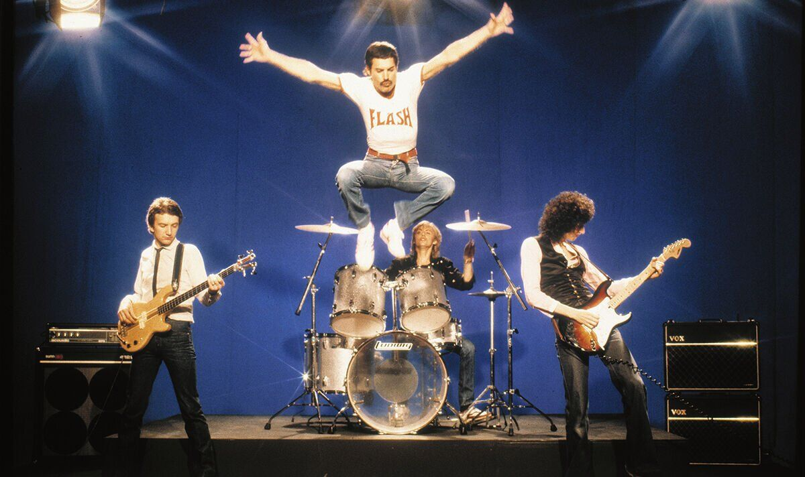

Glazba je od davnina imala snažan utjecaj na društvo. Još u antičkim civilizacijama koristila se u vjerskim obredima, slavljenju, pa čak i u ratne svrhe. Tijekom srednjeg vijeka crkvena je glazba oblikovala duhovni život, dok su u renesansi i prosvjetiteljstvu skladatelji poput Bacha i Mozarta pridonijeli kulturnom buđenju Europe. U 20. stoljeću, pojavom radija i televizije, glazba je postala globalno sredstvo izražavanja – rock’n’roll, jazz, hip-hop i punk oblikovali su društvene pokrete i borbu za prava manjina. Danas glazba ima još širi doseg zahvaljujući digitalnim platformama. Utječe na stavove, modu i ponašanje, posebice kod mladih. Postala je alat za identifikaciju i samoizražavanje, ali i važan dio industrije zabave i ekonomije. Glazba ujedinjuje ljude na koncertima i festivalima, te potiče zajedništvo, kreativnost i toleranciju. Unatoč različitim ukusima, njezina uloga ostaje ista – spajati ljude, prenositi poruke i oblikovati društvene promjene. Zato je glazba više od zabave – ona je glas generacij, ogledalo vremena i alat društvenog povezivanja.Glazbeni žanrovi poput metala, rocka i indie rocka oblikovali su različite generacije i stvorili prepoznatljive kulturne pokrete.
Metal, poznat po snažnim gitarama, brzim ritmovima i intenzivnoj energiji, razvio se iz hard rocka krajem 60-ih. Jedan od najpoznatijih predstavnika tog žanra je Metallica, čija glazba kombinira agresivne rifove s temama o društvenoj nepravdi, borbi i introspekciji. Njihov album Master of Puppets smatra se remek-djelom thrash metala. Bend se ističe i po snažnim nastupima uživo, a njihova dugovječnost i utjecaj pomogli su definiranju thrash metala kao zasebnog podžanra. Tijekom karijere nisu se bojali eksperimentirati – unatoč kritikama, albumi poput Load i St. Anger pokazali su njihovu spremnost na glazbenu evoluciju. Metallica je ostavila dubok trag ne samo u metalu, već i u glazbenoj industriji općenito, nadahnjujući brojne bendove i fanove diljem svijeta.
Rock, s druge strane, ima širi spektar izraza – od psihodelije do glam rocka. Bend Queen ostavio je neizbrisiv trag svojim jedinstvenim stilom, miješajući klasične elemente, teatralnost i snažnu vokalnu izvedbu Freddieja Mercuryja. Njihov hit Bohemian Rhapsody revolucionirao je strukturu rock pjesama i dokazao da glazba ne poznaje granice. Osim glazbenih eksperimenata, Queen je bio poznat po impresivnim live nastupima, od kojih je legendarni nastup na Live Aid koncertu 1985. i danas jedan od najhvaljenijih u povijesti. Njihova sposobnost da spoje različite stilove – od hard rocka do pop balada – učinila ih je iznimno raznolikim i pristupačnim širokoj publici. Pjesme poput We Will Rock You, Somebody to Love i Don’t Stop Me Now i dalje su nezaobilazne na radijskim postajama i sportskim događanjima, potvrđujući njihovu bezvremensku popularnost. Queen nije bio samo glazbeni fenomen, već i kulturni simbol slobode, kreativnosti i emocionalnog izraza.
U novije vrijeme, indie rock donosi osvježavajući, nekonvencionalni zvuk. Good Kid, kanadski bend, kombinira zarazne melodije, energične ritmove i stihove inspirirane svakodnevnim emocijama i pričama. Njihov stil spaja DIY duh i modernu produkciju, čime privlače mlađe slušatelje diljem svijeta. Poznati su po interaktivnom pristupu zajednici fanova putem interneta, što dodatno naglašava njihovu autentičnost. Pjesme poput Witches i Orbit ističu se brzim tempom, pozitivnom energijom i zvukom koji balansira između nostalgije i svježine, čineći ih istaknutim predstavnicima suvremenog indie rocka. Njihova glazba često se pojavljuje u videoigrama i na streaming platformama, gdje su postali omiljeni među generacijom Z. Kombiniranjem pop-kulture, anime estetike i direktne komunikacije s publikom, Good Kid ne samo da gradi glazbeni identitet, već i kulturni pokret. Njihov pristup pokazuje kako indie scena može biti istovremeno nezavisna, profesionalna i duboko povezana s digitalnim svijetom u kojem se nova publika svakodnevno formira.
Svaki od ovih i mnogo drugih žanrova doprinosi bogatstvu glazbene kulture i oblikuje društvene vrijednosti. Glazba nije samo umjetnost ili zabava, već moćan alat za izražavanje, povezivanje i transformaciju, čime potvrđuje svoju trajnu važnost u životima ljudi širom svijeta. Ona nadilazi jezične i kulturne granice, omogućujući ljudima da se prepoznaju i povežu kroz zajedničke emocije i iskustva. Kroz glazbu se grade zajednice, potiče kreativnost i njeguje tolerancija, čineći je neizostavnim dijelom društvenog razvoja i individualnog rasta. U konačnici, glazba ostaje univerzalni jezik koji povezuje prošlost, sadašnjost i budućnost.